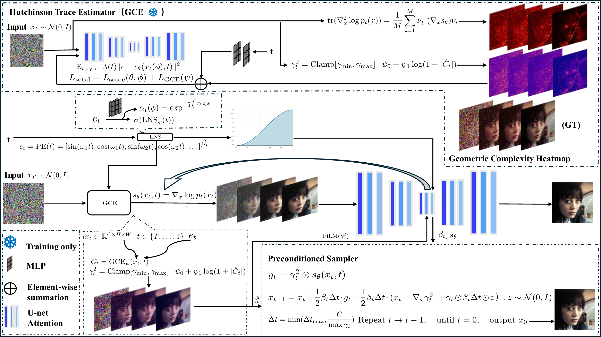

Qinghai University · Computer Science
Haozhuo Cao
hz-cao
I am an undergraduate student in Computer Science and Technology at Qinghai University. My research focuses on diffusion generative models, video generation and editing, and AI system optimization.